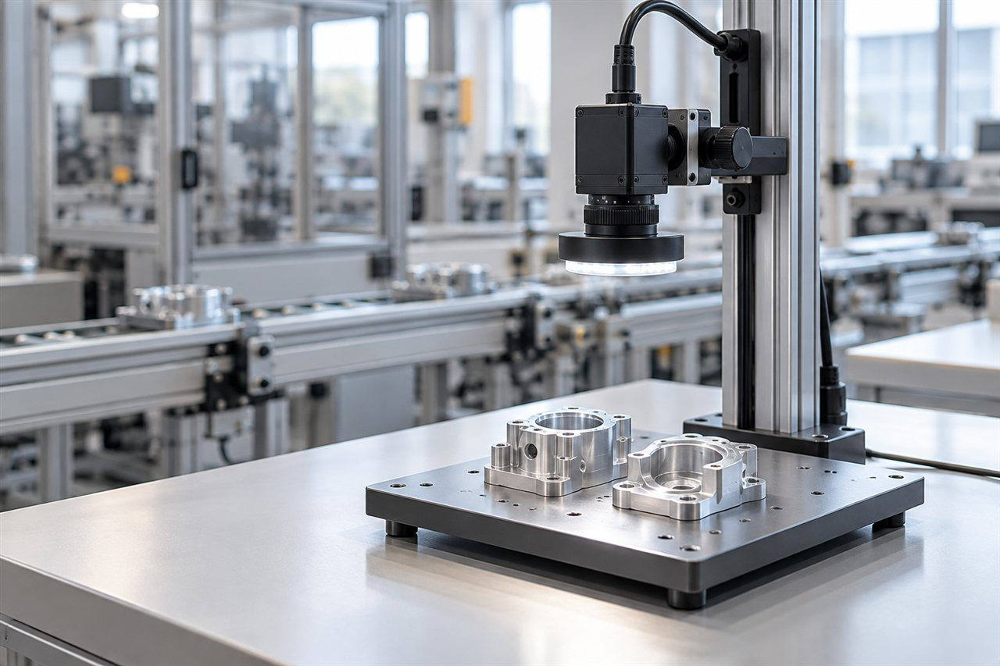

도입 절차
샘플 확인부터 현장 적용까지
01샘플 확인

- 준비 자료
- 제품·검사 부위 사진, 정상·불량 샘플
- 검토 핵심
- 제품의 크기·재질·표면 상태와 불량 위치
- 정리할 내용
- 검사 항목·구분 기준 → 촬영 검토
02촬영 검토

- 준비 자료
- 샘플, 촬영 가능 위치·주변 조명 정보
- 검토 핵심
- 카메라·렌즈·조명 배치로 검사 부위가 구분되는지 확인
- 정리할 내용
- 확인 영역·촬영 조건 → 설치 환경 검토
03현장 적용

- 준비 자료
- 설비·설치 공간 사진, 제품 이동 방식
- 검토 핵심
- 설치 위치·작업 동선·주변 환경·결과 확인 방식
- 정리할 내용
- 현장 조정 사항·적용 범위 정리
단계별 확인 내용은 제품과 현장 환경에 따라 달라질 수 있습니다.
상담 전 준비할 것
- 01
제품 사진
전체 모습·검사 부위
- 02
검사할 항목
흠집·누락·인쇄 중 선택
- 03
설치 환경
촬영 위치·주변 설비 사진